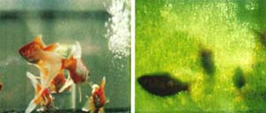
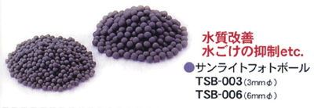

光觸媒加工(設計、合作)步驟：
1. 依客戶所需(討論用途、目標價)；使用環境條件，其抗菌或抗污、除臭....等不同功能是否可行。
2. 依被加工材料或元件，選用最佳之光觸媒原料及最佳節省原料之加工法，以及成本目標價格是否可行。
3. 產品或模組使用光學設計，使其充份發揮其效果。
4. 其它(專利、安規、效能驗證...等)。
世屋光觸媒加工自2002年從日本引進台灣，已具有20多年之加工技術與經驗，並榮獲政府研發補助。
水由氫和氧兩種元素所組成之無機物，在常溫常壓下為無色無味的透明液體，但一般未經處理之水，都含有機、無機物等物質，在較乾淨水，其溶氧DO(Dissolved Oxygen)較高，因分解水中有機物需要氧氣，因此生化需氧量(BOD)就顯得重要，所謂BOD (Biochemical Oxygen Demand)就是在氧化分解作用時每公升所需之氧氣量。
另外水質可分軟水及硬水，硬水簡單的說就是鈉鉀鈣等離子比較多，硬水會產生較多的水垢，對於清洗能力會降低，以大台北陽明山區的水，因處火山石灰區，因此為硬水，台灣南部的水質也屬硬水，翡翠水庫則是軟水，使用硬水的水源，浴廁比較容易有水垢，皂類清潔品也易行成皂垢，累積在衣物上反而皂成過敏來源之一。
淨水處理，主要是依不同用途將水淨化達到可飲用或棑放各類不同之標準，有物理、化學、生物法，飲用水的水源一般都比較好，主要是將水中雜質處理後，並且消毒，廢水排放則是具更多技術涵量，處理對象包括油、重金屬、有機物(其中更以氨、磷等化合物為主)，主要有沉澱(慢砂、快砂濾)、曝氣、氯氣處理..等法。

現在多數採用的水處理法前段是沉澱、中後段，是活性污泥法等微生物處理為主，因成本問題，而很難處理有機氯化合物產生剩餘細小污物而成為問題。用光觸媒處理則可能處理難分解性化學物質，也沒有剩於污泥產生。現在已開發出只有，由氧化鈦所構成的膜狀光觸媒，用此製品施行水處理，又將膜狀光觸媒覆蓋於玻璃管的內面，使含有害物質水流通過管中，在由管內的外側照射光的光觸媒處理裝置，和將光觸媒pellet 置入玻璃管中使含有害物質的水流通過管中，再由管的外側照射光的光觸媒處理裝置已被開發。水處理的對象物的濃度較脫臭的對象物質的濃度為高因此需增大照射光量，據此選定光源和配置system design是非常重要。著成黑色的水光線不易透過，因此需併用微生物處理等方法來進行水處理，又氧化鈦光觸媒和臭氧或氧化氯併用以促進處理速度的方法也正在推行，在進行水處理之有機物適當使用光觸媒濾網，也可加速其反應。

當光觸媒與水接觸並暴露在近紫外線的光線下，在表面上會產生氫氧離子氫氧自由基，經反應會分解有機化合物，如微生物菌類和有害物質能夠在40分鐘的反應中殺死分解2佰萬個大腸桿菌，而氫氧離子的反應只在光觸媒產品表面上因此並不會影響您飲用水的問題。
研究特徵：
*讓水變的溫和並且分解水中有機致癌物抑制臭味細菌滋生。
*經光觸媒作用水會產生循環並能夠長久保持水質乾淨。
＊經光觸媒作用水中菌量在30-40分鐘會被消滅。
＊高溫融射法，不溶於水安全性高：可重複使用環保安全又經濟。
＊無論將儲存水放置何處都能安全將水保持七年安全無慮。
(使用自來水或乾淨之溪水所做之實驗結果)
1. 依客戶所需(討論用途、目標價)；使用環境條件，其抗菌或抗污、除臭....等不同功能是否可行。
2. 依被加工材料或元件，選用最佳之光觸媒原料及最佳節省原料之加工法，以及成本目標價格是否可行。
3. 產品或模組使用光學設計，使其充份發揮其效果。
4. 其它(專利、安規、效能驗證...等)。
世屋光觸媒加工自2002年從日本引進台灣，已具有20多年之加工技術與經驗，並榮獲政府研發補助。